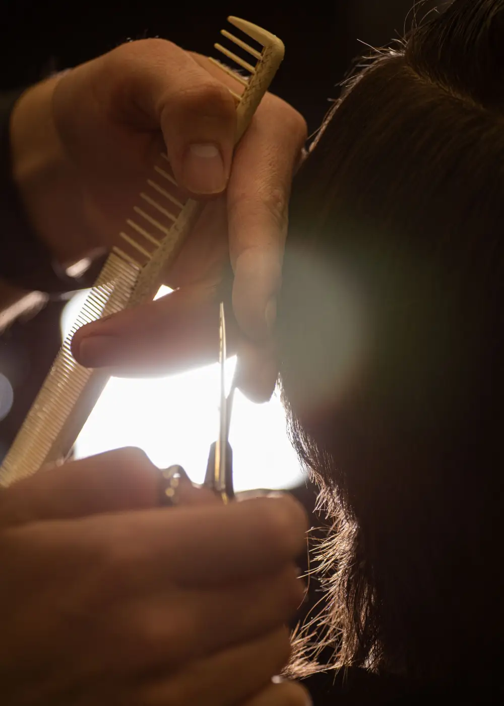
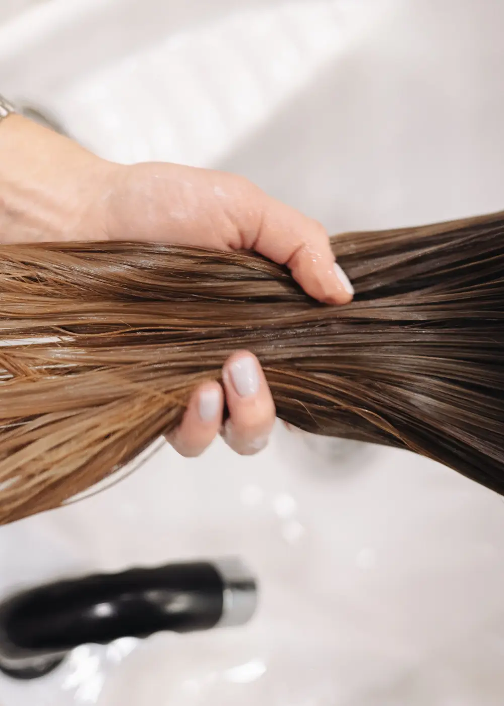
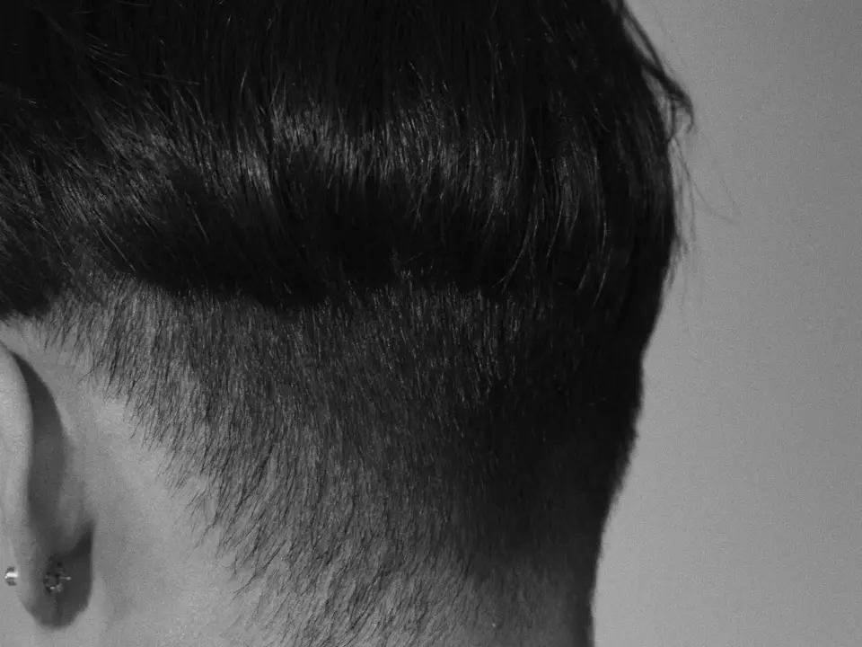
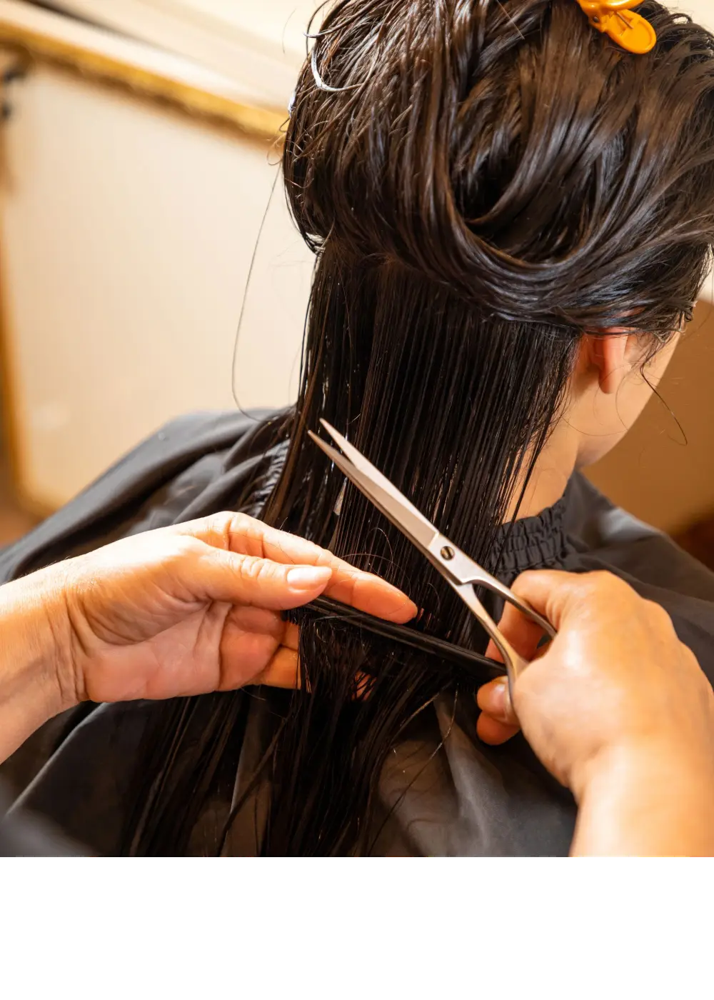
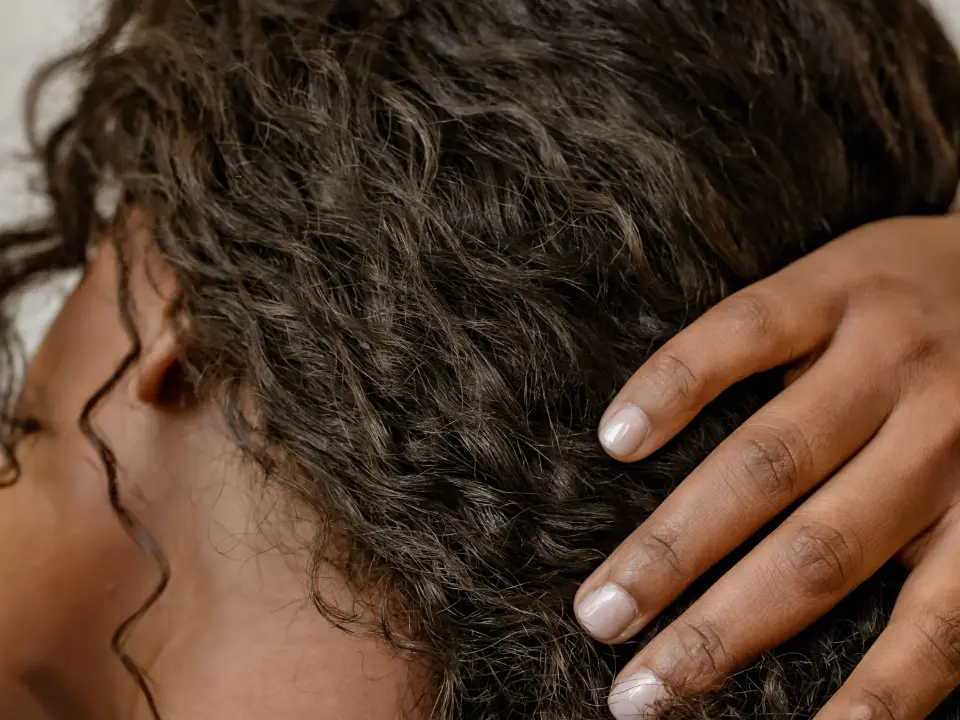
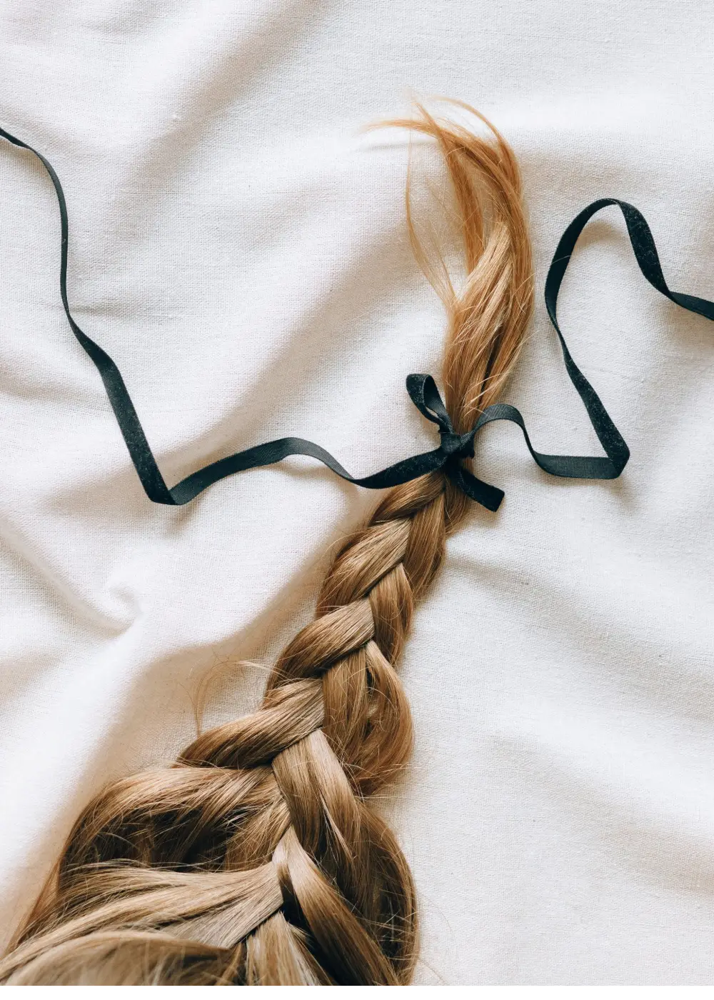
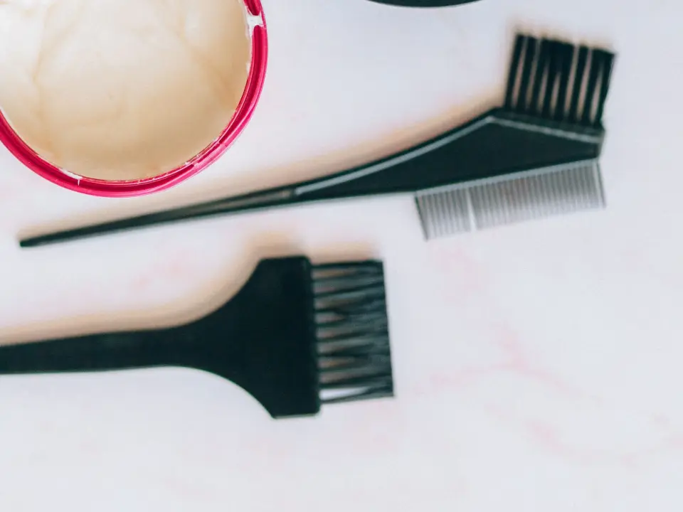
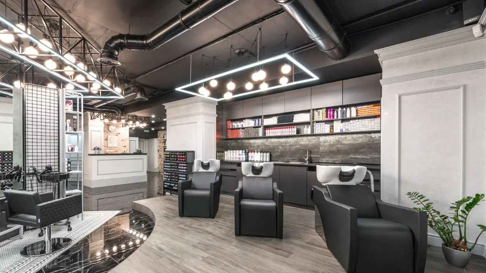
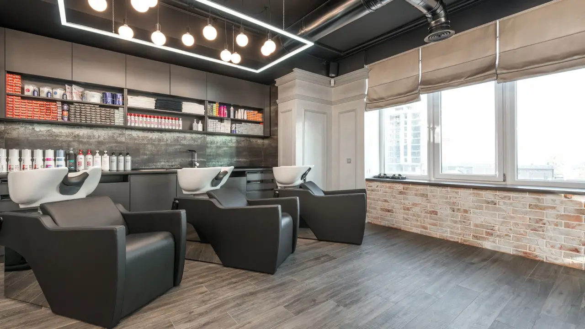
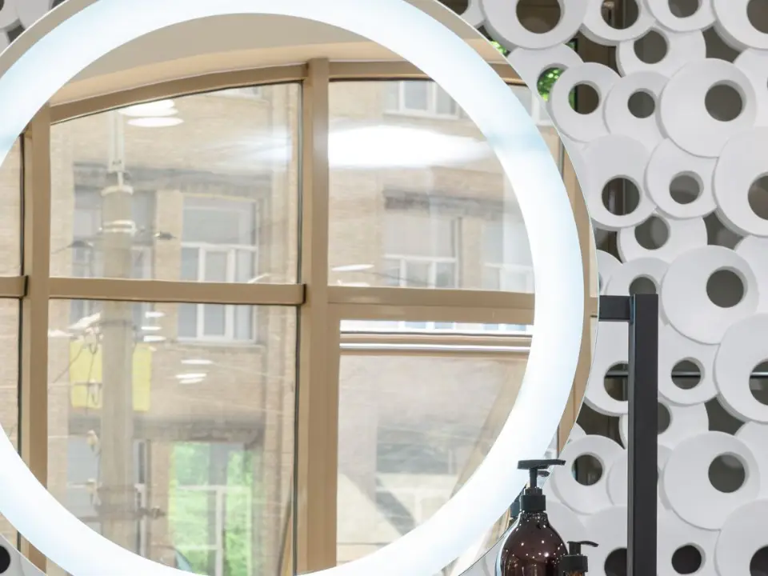

la ligne se décide sèche
On coupe sur cheveu humide, on vérifie une fois sec, et on reprend s’il le faut. La reprise fait partie du rendez-vous, pas d’un deuxième.
Un fauteuil, une personne, du début à la fin. C’est la seule règle de la maison, et elle décide de tout le reste.

Le rendez-vous commence à sec, près de la fenêtre, avant tout lavage. Une couleur mouillée ment : elle paraît toujours plus foncée et plus uniforme qu’elle ne l’est. Ce qui se décide dans ces cinq minutes tient pour les deux heures qui suivent.
Ce qu’on trouve s’écrit à votre dossier : la formule, le temps de pose, ce qui a marché et ce qui n’a pas marché. La fois suivante reprend là où la précédente s’est arrêtée, jamais à zéro.


Certaines demandes abîment le cheveu d’une façon qu’aucun soin ne rattrape. Dans ce cas on propose un chemin plus long, deux ou trois séances espacées d’au moins six semaines, ou on ne prend pas le rendez-vous.
On le dit à la consultation, pas une fois que vous êtes installée au fauteuil. Et ce qui n’est pas au sommaire ne se fait pas ici : ni extensions, ni lissage permanent, ni perruque.
On coupe sur cheveu humide, on vérifie une fois sec, et on reprend s’il le faut. La reprise fait partie du rendez-vous, pas d’un deuxième.
La barre rouge montre la durée réellement bloquée dans l’agenda, pas une moyenne optimiste. Ouvrez un geste pour lire ce qu’il contient.

On coupe sur cheveu humide, on vérifie une fois sec, et on reprend s’il le faut. La reprise fait partie du rendez-vous, pas d’un deuxième.
Retouche de contour dans les dix jours, sans frais
Application aux racines, temps de pose minuté, vérifié deux fois sur une mèche témoin. Revitalisant sur les longueurs, séchage, mise en forme.
La formule est notée à votre dossier pour la fois suivante
Mèche par mèche, puis patine pour poser le ton. Un blond qui demande trois séances est annoncé comme trois séances dès la consultation, pas découvert en cours de route.
Le plan est écrit : combien de séances, à quel intervalle
Un soin ne répare rien de cassé. Il rend le cheveu plus souple, plus facile à peigner, et il retarde la casse. On le dit comme ça, et pas autrement.
Diagnostic sur trois zones : racine, longueur, pointe
On ne fait pas tenir une coiffure trois jours. On la fait tenir la soirée, et on vous montre comment la défaire sans arracher.
Attaches et chignons sur cheveu de la veille, plus tenace
Elle se prend à part, avant le rendez-vous de couleur, et elle ne se facture pas. On y regarde l’historique, les trois zones, l’élasticité, la porosité et le fond naturel.
Obligatoire avant une première couleur
Un retard de plus de quinze minutes raccourcit le geste ou le reporte : le rendez-vous suivant commence à l’heure, et il n’y a nulle part où le décaler.

Une boucle se raccourcit en séchant, parfois du tiers. On la coupe donc sèche et sans peigne, pour couper là où elle vit vraiment et non là où l’eau l’a étirée.
Deux chevelures qui demandent la même coupe ne la reçoivent pas de la même façon. Ce qu’on observe avant de sortir les ciseaux tient en trois choses : l’implantation, la densité, et le comportement de la mèche une fois sèche.


La couleur, elle, se décide au bol. Les racines d’abord, les longueurs seulement si elles en ont besoin. Le temps de pose est vérifié sur une mèche témoin à cinq minutes près : c’est la porosité qui le fixe, pas l’horloge du salon. Le dernier rinçage se fait tiède, et ces trente secondes changent visiblement la tenue d’une couleur fraîche.


Il n’y a pas de salle d’attente. Si votre plage commence à 10 h, elle commence à 10 h, et elle est bloquée à votre nom du début à la fin.
Vous pouvez demander quelqu’un en particulier ou laisser l’agenda décider. Le prochain rendez-vous se fixe en partant, si vous le voulez, ou plus tard, et jamais sous pression.
Ni photo, ni nom de famille. Un prénom et une spécialité : c’est tout ce qui vous sert à choisir, et vous pouvez aussi laisser l’agenda décider. Le reste leur appartient.

Appelez ou écrivez en disant ce que vous voulez faire et quand vous êtes libre. On répond dans les vingt-quatre heures ouvrables avec un jour, une heure et une durée bloquée. Jamais « on vous rappelle ».
Pour une première couleur, la plage proposée sera d’abord celle de la consultation de vingt minutes. Un rendez-vous se déplace sans frais jusqu’à quarante-huit heures à l’avance ; en deçà, la plage reste vide, et quelqu’un d’autre a été refusé pour elle.